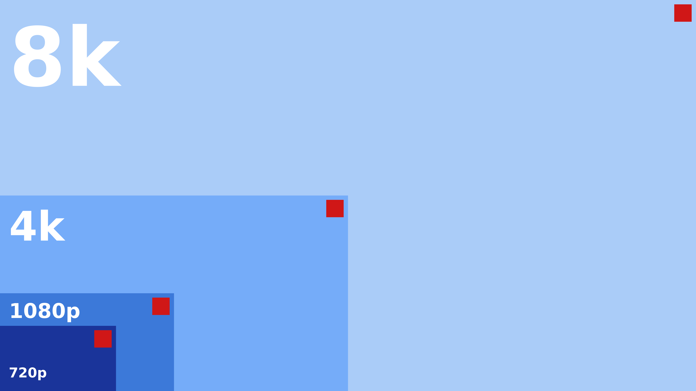
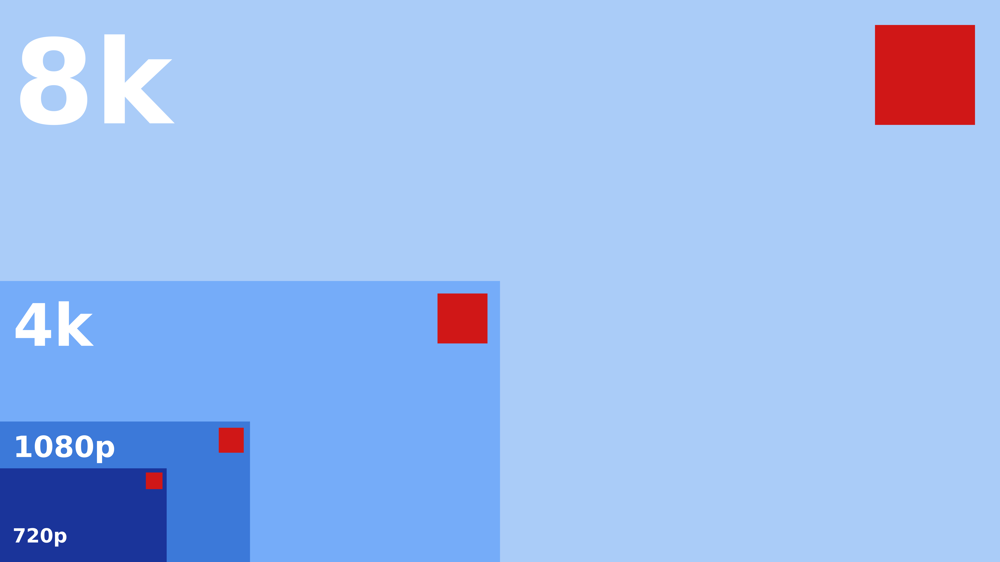
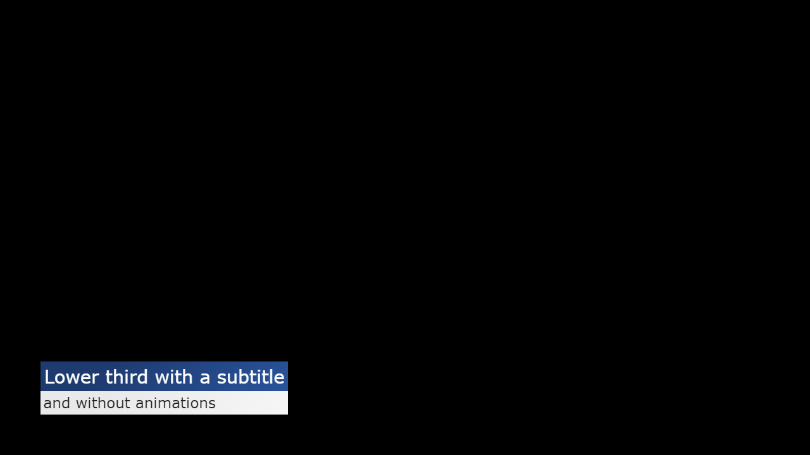

In this article we are going to create a production-ready HTML template. We will look at the characteristics of a robust template and then discover the details of the layout and design of a production-ready lower-third template. At last we will test the template with CasparCG. Have a look at the live example and its source code.
This article is the second installment of the series “A comprehensive guide to HTML templates for CasparCG”. Have a look at the first part Introduction to CasparCG’s HTML producer to learn using HTML templates with CasparCG.
Characteristics of production-ready templates
A production-ready template has to follow and observe a few things:
- It has to ensure that the background is transparent and visible elements are clipped at the edges of the viewport to prevent the HTML producer from drawing scrollbars.
- It should be able to be used with different screen sizes. Its layout and design should be resolution independent.
- It gracefully handles AMCP commands with idempotency where possible, and
- it is capable of parsing incoming data in the form of the traditional component XML data or JSON strings to be used with new and dated official and custom AMCP clients.
CSS properties overflow and background-color
The template should make sure that the background color is
transparent and the visible elements are clipped at the edges of the
viewport. To ensure this, we set the background-color: transparent and overflow: hidden:
<!DOCTYPE html>
<html lang="en">
<head>
<meta charset="utf-8" />
<title>lower-third-responsive.html</title>
<style type="text/css">
html {
/* Explicitly set background color */
background-color: transparent;
/* Disable scrollbars by clipping page overflow */
overflow: hidden;
}
</style>
</head>
<body>
<div class="overlay">
<div class="line line-1">Lower third with a subtitle</div>
<div class="line line-2">and without animations</div>
</div>
</body>
</html>
Why do we set these properties only on the html tag and not the body tag? There is a weird behavior that “[I]n the absence of a background on the html element, the body background will cover the page. If there is a background on the html element, the body background behaves just like any other element.”1 and thus doesn’t cover the entire page. So in order to prevent any template code to accidentally unset the windows background color via body tag, we explicitly set the background on the html tag. The overflow property can be set on either or both html and body tag. As far as I can tell it doesn’t make a difference. The overflow of an absolutely positioned element is clipped even if the body behaves like any other (block) element. For simplicity and clarity I define it in the html tag alongside the background-color.
Bonus: easier sizing of elements with box-sizing: border-box
From the Mozilla Developer Network documentation:
The
box-sizingCSS property defines how the user agent should calculate the total width and height of an element.By default in the CSS box model, the width and height you assign to an element is applied only to the element’s content box. If the element has any border or padding, this is then added to the width and height to arrive at the size of the box that’s rendered on the screen. This means that when you set width and height, you have to adjust the value you give to allow for any border or padding that may be added.
The
box-sizingproperty can be used to adjust this behavior:
content-boxgives you the default CSSbox-sizingbehavior. If you set an element’s width to 100 pixels, then the element’s content box will be 100 pixels wide, and the width of any border or padding will be added to the final rendered width.border-boxtells the browser to account for any border and padding in the values you specify for an element’s width and height. If you set an element’s width to 100 pixels, that 100 pixels will include any border or padding you added, and the content box will shrink to absorb that extra width. This typically makes it much easier to size elements [emphasis added].
I recommend you to start developing your HTML templates with box-sizing: border-box.
It keeps your templates more flexible and saves you time if you need to
change for example the font size and you have to adjust an elements
padding. I also recommend it if you want to create templates that have a
dynamic width based on its content, for example a dynamic image or
text.
Include in your CSS instructions the latest best practice2:
html {
/* Set default box-sizing to border-box for easier sizing of elements */
box-sizing: border-box;
}
*, *:before, *:after {
/* Make box-sizing property easy to change by components if required */
box-sizing: inherit;
}
box-sizing: border-box also makes it easier to create
templates that are independent to the HTML producers, respectively the
browsers, resolution. This leads us to the second characteristic of
production-ready templates.
Resolution independent layout and design
Ideally your templates look and behave identically no matter the video format you are using them with. This obviously saves you time since you don’t need to create and maintain templates for different resolutions. Additionally it makes today’s templates ready for future use with resolutions like 4k or 8k.
Templates that adhere to different resolutions have to be created
with relative length units. You can’t use absolute length units such as px, pt.
Imagine you create a station bug template optimized for 1080p video
mode that positions an image in the top right corner with a fixed
distance of 48px to the edges of screen and a width and height of 192px.
 Comparison chart with a template designed using absolute length units for 1080p.
As you can see in the chart above, the red square illustrating a station bug overlay is perfectly designed for the video mode 1080p. It’s size and distance to the edges and the entire screen is well balanced. In the smaller video mode of 720p, the red square and the distance to the edges is too big. In the bigger video mode of 4k, the red square and the distance to the edges is too small. This is even more visible in the even larger video mode of 8k, where the overlay is disproportionally way to small.
In the chart below the red square in the video mode of 1080p is identical to the chart above, but it is designed with relative length units:
 Comparison chart with a template designed with relative length units.
As you can see here, the red square changes its size and distance to the edges according to the video mode. You can play with this responsive design example live demonstration to see the effect. As you can see in the demonstration, one of the two squares changes its position and size like the red square in the chart. It behaves responsive to the window or screen size. This responsiveness is part of responsive web design, an approach to web design that makes web pages render well on a variety of devices.
Even though responsive web design is mainly about the fluid grid concept (for example the number of elements in a row) and media queries that allow the page to use different CSS style rules based on the screen size (for example the display of a hamburger button on smaller devices), both of which are not that interesting for responsive HTML templates, the key takeaway is that we have to set certain properties of elements with responsiveness in mind, these include:
- Position and size of elements
- Font sizes and padding
- Flexible, auto-scaling images
Responsive positioning and sizing of elements
Responsive positioning and sizing can be achieved with the percentage CSS data type (for example width: 50%) or the viewport-percentage lengths (for example width: 50vw), which is a subset of the relative length units.
The difference between percentage and viewport-percentage is that the
former is relative to the parent element. For example, if you have a
div with a width of 100 pixels and you define width: 50% in a child div, that div will have a size of 50 pixels.
The latter, viewport-percentage, is always relative to the viewport.
The viewport is the visible area of the web page that is displayed in
the browser. The size of the browser is the size of the channel the HTML
producer belongs to. Therefore, the viewport has the resolution of the
channels video mode. Additionally, since we define overflow: hidden on the html tag, the viewport and the page size should be the same at any given time.
Viewport-percentage lengths are ideal to design responsive HTML templates. There is currently four lengths/units that are currently supported:
| Unit | Description | 1080p (1920x1080) |
|---|---|---|
vh |
Equal to 1% of the height of the viewport | 1vh = 10.8px |
vw |
Equal to 1% of the width of the viewport | 1vw = 19.2px |
vmin |
Equal to the smaller of vw and vh |
1vmin = 10.8px |
vmax |
Equal to the larger of vw and vh |
1vmax = 19.2px |
These units can be used both for positioning and sizing:
.overlay {
/* Position overlay with equal margin to the left and bottom, 96px at 1080p */
position: absolute;
left: 5vmax;
bottom: 5vmax;
/* Set a max-width to prevent going over the right margin at 100% - 2 * margin, 1728px at 1080p */
max-width: calc(100vw - 2 * 5vmax);
}
The above CSS rules position the .overlay absolute in the bottom left corner with 5vmax distance to the viewport edges. vmax refers to the larger of vw and vh which in the case of the video mode 1080p is vw with 1920px. 5vmax is therefore equal to 96px
(1920px * 5%). I am using the same value for both the horizontal and
vertical positioning in order to have the overlay equally spaced in the
corner of the screen not matter its size.
The size of the .overlay is implicitly set to auto.
The width and height will therefore be determined by its content. In
order to prevent the overlay from going over the (imagined) right
margin, we calculate the max-width based on the full width of the viewport minus two times the margin of 5vmax.
Responsive font sizing and padding
Responsive font sizing and padding is also achieved through
viewport-percentage lengths. It is possible to directly set an elements font-size and padding properties to a viewport-percentage. The problem with this approach is that
- you lose the flexibility of sizing different elements font sizes relative to each other with respect to a common base, and
- you sacrifice the ability to size an elements properties relative to that elements font size.
The relative length units have a subset specifically for and relative to font sizes. The two that are important for HTML templates are:
| Unit | Description |
|---|---|
rem |
Represents the font-size of the root element (typically html). |
em |
Represents the calculated font-size of the element. |
Using rem to set the font-size
rem is used to set an elements font size relative to the html elements font-size property. For example, we can set the font size of the html element to 40px and then set another elements font size to 1.1rem. The resulting calculated font size for that element will be 44px.
Instead of setting the html elements font-size property
to a fixed value we can make all font sizes in the HTML template
responsive by setting the root elements font-size with
viewport-percentage length units.
html {
/* Set responsive root font size to 43.2px at 1080p */
font-size: 4vh;
}
.line-1 {
/* Calculated font size is 43.3px */
font-size: 1.0rem;
}
.line-2 {
/* Calculated font size is about 34.56px */
font-size: 0.8rem;
}
Since the line elements size is automatically determined by their
content, which is now based on the height of the viewport through 4vh, we have made the HTML template responsive.
Using em to set padding
em is used to set any property that takes a length relative to the font size of that element. For example, you can set the padding (the spacing between the elements edges and the text) property relative the elements calculated font-size.
This is useful because larger text looks better with a larger padding
while smaller text looks better with smaller padding. For example, we
can define a padding for both lines like this:
.line {
/* Define padding relative to the font size */
padding: 0.2em;
}
Since this CSS class is applied to both lines, the calculated padding for .line-1 will be 8.66px (43.3px * 0.2) and for .line-2 6.912px (34.56px * 0.2).
Flexible, auto-scaling images
Images should also behave responsive. Usually there is two different
use cases. The first use case is where you want to make a static image
responsive for example a station bug. The image is preferably vector based such as an SVG. The img tag can then either be set to a specific size, for example with width: 8vmax or the parent element can be set to a specific size and the image tag to width: 100%.
The second use case is where you want to display a dynamic image in a fixed size parent element, for example a portrait picture or a team logo that is dynamically passed to the template. In this case you will heavily relay on the object-fit CSS property to achieve the desired result. The responsive display and especially the transfer of images through AMCP will be covered in a future article.
Finishing up the design
The visuals of our lower third template still lack a few things. We should at least define a font family and the text and background color of the title and the subtitle lines.
I recommend you to set a default font family (and actually a font color, too) alongside the font size in the html root element. The full CSS rules for the html selector look like this:
html {
/* Explicitly set background color */
background-color: transparent;
/* Set default box-sizing to border-box for easier sizing of elements */
box-sizing: border-box;
/* Disable scrollbars by clipping page overflow */
overflow: hidden;
/* Set default font family */
font-family: Verdana, Geneva, sans-serif;
/* Set responsive root font size to 43.2px at 1080p */
font-size: 4vh;
}
After adding the text and background color to the two lines the respective CSS classes look like this:
.line-1 {
/* Define background and text color */
background: #29539b linear-gradient(315deg, #29539b 0%, #1e3b70 74%);
color: white;
/* Calculated font size is 43.3px at 1080p */
font-size: 1rem;
}
.line-2 {
/* Define background and text color */
background: #f6f6f6 linear-gradient(315deg, #f6f6f6 0%, #e9e9e9 74%);
color: #222;
/* Calculated font size is 34.56px at 1080p */
font-size: 0.8rem;
}
Check out Eggradients.com to find beautiful color combinations and gradients.
One last and important thing to remember is to take care of
accidental line breaks (text wrapping). For example if you put a text in
a line of the lower third that is too long to be displayed, you may
want to cut it off instead of having it wrap to multiple lines. This is
achieved by setting the white-space CSS property to nowrap and at the same time hiding the overflow. The full .line class looks like this:
.line {
/* Define padding relative to the font size */
padding: 0.2em;
/* Prevent text wrapping and overflow */
white-space: nowrap;
overflow: hidden;
}
Playing and stopping the template
It’s about time to test the template with CasparCG’s HTML producer.
But before we can do that we need to employ a mechanism to show and hide
the template when it is played and stopped. The AMCP command CG ADD for adding a new template takes an argument for the play-on-load flag. This means that the template may be loaded but has to remain invisible, respectively not playing immediately.
There is at least four options to make an element invisible:
- removing the element from the document tree, or
- setting the elements display CSS property to
none, or - setting the elements visibility CSS property to
hiddenorcollapsed, or - making an element fully transparent by setting the elements opacity CSS property to
0.
I recommend you to use the fourth option, setting the elements opacity because of these reasons:
- Temporarily removing an element from the document tree may lead to unpredictable behavior, for example when you want to update the data before you start to play the template.
- If you set the elements
displayproperty, you have to know its previous value to reset it to when you want to make it visible again. - Animation libraries like VelocityJS or d3js may have to set the
displayproperty toblockin order to work properly. Therefore it’s advisable to not use this property. - The
opacityproperty doesn’t have any effect on the flow layout, it’s effect is purely visual and not structural. - The
opacityproperty is the way to do transitions like fade ins or fade outs, and is used by animation libraries alike. Therefore an opacity set to zero is the correct initial value.
After adding the opacity property the full .overlay CSS class looks like this:
.overlay {
/* Initially hide the overlay */
opacity: 0;
/* Position overlay with equal margin to the left and bottom, 96px at 1080p */
position: absolute;
left: 5vmax;
bottom: 5vmax;
/* Set a max-width to prevent going over the right margin at 100% - 2 * margin, 1728px at 1080p */
max-width: calc(100vw - 2 * 5vmax);
}
Handling play and stop commands
After the HTML producer has loaded the template, it will at some point receive the AMCP commands CG PLAY and CG STOP to play and stop the template. This will trigger the global JavaScript functions play() and stop(). These functions are the locations to hook up the code that changes the opacity of the overlay.
Below the style tag and above the closing head tag, we can add a script tag with the type “text/javascript” that contains the two functions:
function play () {
const overlay = document.querySelector('.overlay')
overlay.style.opacity = 1
}
function stop () {
const overlay = document.querySelector('.overlay')
overlay.style.opacity = 0
}
The JavaScript code is simple: We first find an element that has a CSS class .overlay applied and then set that element’s CSS property opacity accordingly.
Playing the template with CasparCG
Save your copy of the template (or obtain the source code) to your servers template directory with a name for example lower-third-responsive.html. Start CasparCG and play the template with your favorite AMCP client or enter these commands into the servers console:
CG 1 ADD 0 "lower-third-responsive" 1 to load and play, and
CG 1 STOP 0 to stop.
 Screenshot of a channel in video mode 720p5000
Screenshot of a channel in video mode 1080p5000
Screenshot of a channel in video mode 2160p5000
All these screenshots were taken with the image producer with the command ADD 1 IMAGE filename. They all look the same 🎉
Conclusion
In this second part of the series we have covered the important bits about creating production-ready HTML templates for CasparCG:
- The CSS styles that should be applied to ensure that the background is transparent and visible elements are clipped without the appearance of scrollbars.
- Explored the reasoning behind border-box sizing for a peaceful mind.
- Resolution independence and future-proof design through responsive
positioning and sizing of elements and responsive font sizing and
padding.
We have also learned how to play and stop a template by using JavaScript to set the overlays opacity. In the next part of the series, we are going to have a look at the other AMCP commands and how we can make a template dynamic by consuming the incoming data. We will also have a look at advanced testing and debugging and what production-ready JavaScript code should feature.
In the mean time I invite you to join the discussion in the official CasparCG forum.